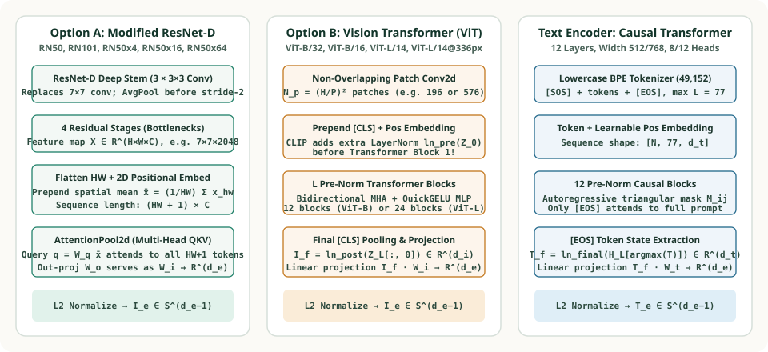

3. CLIP's Dual-Tower Architecture: Modified ResNet-D + AttentionPool2d, Pre-Norm Vision Transformer (ViT) & Causal Text Transformer
In OpenAI's Figure 3 pseudocode, image_encoder(I) and text_encoder(T) appear as single black-box function calls. Yet when Radford et al. (2021) trained CLIP across $400\text{ million}$ web pairs, standard off-the-shelf ResNet-50 and Vision Transformer (ViT) configurations underperformed until three subtle architectural changes were introduced: (1) replacing ResNet's global average pooling with a Transformer-style AttentionPool2d layer, (2) inserting an extra Pre-Encoder LayerNorm (ln_pre) inside ViT right after patch+position embedding addition, and (3) pooling the 12-layer causal BPE Text Transformer at the [EOS] token state.


AttentionPool2d (left) and Pre-Norm Vision Transformer with ln_pre (center)—paired with the 12-layer Causal BPE Text Transformer (right).1. Image Encoder Family A: Modified ResNet-D & AttentionPool2d
OpenAI trained five convolutional CLIP models: RN50, RN101, and three EfficientNet-style compound-scaled variants (RN50x4, RN50x16, RN50x64) that scale width, depth, and input resolution simultaneously. Rather than using a vanilla 2015 He et al. ResNet, CLIP applies three upgrades:
- ResNet-D Deep Stem (He et al., 2019): Replaces the initial $7 \times 7$ stride-2 convolution with three stacked $3 \times 3$ convolutions ($32 \to 32 \to 64$ channels) followed by $2 \times 2$ average pooling.
- Anti-Aliased Blur Downsampling (Zhang, 2019): In every residual block that downsamples spatial resolution ($2\times$), standard ResNets use a stride-2 $1 \times 1$ convolution on the skip connection, which discards $75\%$ of the feature map pixels and causes severe shift aliasing. CLIP inserts a $2 \times 2$ stride-2
AvgPool2dbefore a stride-1 $1 \times 1$ convolution so all spatial locations contribute before decimation. -
AttentionPool2dInstead of Global Average Pooling: In a standard ResNet-50, the final $7 \times 7 \times 2048$ feature map $\mathbf{X} \in \mathbb{R}^{H \times W \times C}$ is collapsed via unweighted spatial averaging $\bar{\mathbf{x}} = \frac{1}{HW}\sum_{h,w} \mathbf{x}_{h,w}$. Unweighted averaging destroys spatial layout ("a person riding a horse" vs. "a horse standing next to a person") and dilutes small foreground objects with background sky/grass pixels.CLIP replaces global average pooling with a single Multi-Head QKV Self-Attention layer (
AttentionPool2d):$$\mathbf{Z}_0 = \begin{bmatrix} \bar{\mathbf{x}} \\ \mathbf{x}_{1,1} \\ \vdots \\ \mathbf{x}_{H,W} \end{bmatrix} + \mathbf{E}_{\text{pos}} \in \mathbb{R}^{(HW + 1) \times C}, \qquad \mathbf{I}_e = \operatorname{L2Norm}\!\Bigl(\operatorname{MHA}\bigl(Q = \mathbf{Z}_{0,0},\; K = \mathbf{Z}_0,\; V = \mathbf{Z}_0\bigr)\Bigr).$$Specifically, the spatial average $\bar{\mathbf{x}} \in \mathbb{R}^C$ is prepended as token $0$ (acting like a[CLS]query), a learnable 2D positional embedding $\mathbf{E}_{\text{pos}} \in \mathbb{R}^{(HW+1) \times C}$ is added, and token $0$ attends over all $HW + 1$ spatial locations via Multi-Head Attention whose output projection $W_O \in \mathbb{R}^{C \times d_e}$ directly maps into the joint embedding space!
2. Image Encoder Family B: Pre-Norm Vision Transformer (ViT)
OpenAI also trained four Vision Transformer models following Dosovitskiy et al. (2020): ViT-B/32, ViT-B/16, ViT-L/14, and ViT-L/14@336px (which fine-tunes ViT-L/14 for one additional epoch at $336 \times 336$ pixel resolution by bicubically interpolating the $16 \times 16 = 256$ patch positional grid to $24 \times 24 = 576$ patches).
Given an RGB image $\mathbf{I} \in \mathbb{R}^{H \times W \times 3}$ and patch size $P \in \{32, 16, 14\}$, a stride-$P$ convolution with kernel size $P \times P$ extracts $N_p = (H/P)(W/P)$ patch vectors. CLIP prepends a learnable class token $\mathbf{x}_{\text{cls}} \in \mathbb{R}^{d_i}$, adds learnable positional embeddings $\mathbf{E}_{\text{pos}} \in \mathbb{R}^{(N_p + 1) \times d_i}$, and applies an extra LayerNorm (ln_pre) before the first Transformer block:
Each of the $L$ Transformer blocks uses Pre-LayerNorm and OpenAI's fast sigmoid-approximated QuickGELU activation $\operatorname{QuickGELU}(x) = x \cdot \sigma(1.702\,x)$. After block $L$, the [CLS] token at index $0$ passes through a final LayerNorm ln_post and linear projection $W_i \in \mathbb{R}^{d_i \times d_e}$.
Deep-Dive Architecture Companion: For a complete mathematical and PyTorch comparison between Dosovitskiy et al.'s (2020) standard supervised ViT and OpenAI's CLIP ViT across all six modifications (bias-free conv1, ln_pre, QuickGELU, $(2L)^{-1/2}$ residual scaling, ln_post + $W_i$, and ViT-L/14@336px 2D bicubic positional interpolation), see The Vision Transformer (ViT) Used in CLIP and Vision Transformer (ViT) from First Principles inside the Deep Learning → Architectures → Vision Transformer (ViT) series.
3. Text Encoder: 12-Layer Causal BPE Transformer Pooled at [EOS]
For the text tower, CLIP uses a 12-layer decoder-style (autoregressive/causal) Transformer inspired by GPT-2:
- Lowercase BPE Vocabulary ($49{,}152$ tokens, Context $L = 77$): Every text string is lowercased, tokenized with Byte-Pair Encoding, bracketed with
[SOS](token ID $49{,}406$) and[EOS](token ID $49{,}407$), and padded or truncated to fixed length $L = 77$. - Causal Self-Attention Mask: Token $t$ can only attend to positions $\le t$. Consequently, only the final
[EOS]token has attended to the entire text prompt! - Why
argmax(text_tokens)Selects[EOS]: Because[EOS]is assigned the largest integer ID ($49{,}407$) in the entire vocabulary (while padding is $0$), OpenAI's implementation extracts the sequence summary simply by indexing each row attext.argmax(dim=-1):$$\mathbf{T}_f^{(i)} = \operatorname{LayerNorm}_{\text{final}}\!\bigl(\mathbf{H}_L^{(i)}[\text{eos\_idx}_i]\bigr) \in \mathbb{R}^{d_t}, \qquad \mathbf{T}_e^{(i)} = \frac{\mathbf{T}_f^{(i)} W_t}{\bigl\|\mathbf{T}_f^{(i)} W_t\bigr\|_2}.$$
| CLIP Model | Resolution & Grid | Vision Width $d_i$ / Layers | Text Width $d_t$ / Layers | Shared Embed $d_e$ | GFLOPs / Image |
|---|---|---|---|---|---|
| RN50 | $224 \times 224$ ($7\times 7$ pool) | $2{,}048$ (Stages 3-4-6-3) | $512$ / 12 layers / 8 heads | $1{,}024$ | $6.1$ |
| RN50x64 | $448 \times 448$ ($14\times 14$ pool) | $4{,}096$ (Scaled depth/width) | $1{,}024$ / 12 layers / 16 heads | $1{,}024$ | $262.9$ |
| ViT-B/32 | $224 \times 224$ ($7\times 7 = 49$ patches) | $768$ / 12 layers / 12 heads | $512$ / 12 layers / 8 heads | $512$ | $4.4$ |
| ViT-B/16 | $224 \times 224$ ($14\times 14 = 196$ patches) | $768$ / 12 layers / 12 heads | $512$ / 12 layers / 8 heads | $512$ | $17.6$ |
| ViT-L/14@336px | $336 \times 336$ ($24\times 24 = 576$ patches) | $1{,}024$ / 24 layers / 16 heads | $768$ / 12 layers / 12 heads | $768$ | $191.1$ |
4. Reference Python Implementation: AttentionPool2d & [EOS] Pooling
import math
def attention_pool_2d_forward(
feature_map_hwc: list[list[float]], # flattened [HW, C]
pos_embed: list[list[float]], # [HW + 1, C]
w_q: list[list[float]], # [C, d_e]
w_k: list[list[float]], # [C, d_e]
w_v: list[list[float]], # [C, d_e]
) -> list[float]:
"""Single-head pedagogical trace of CLIP's AttentionPool2d layer."""
hw = len(feature_map_hwc)
c_dim = len(feature_map_hwc[0])
# 1. Prepend spatial mean token x_bar at index 0
mean_token = [sum(feature_map_hwc[i][c] for i in range(hw)) / hw for c in range(c_dim)]
tokens = [mean_token] + feature_map_hwc
# 2. Add 2D positional embedding to all HW + 1 tokens
tokens = [[t[c] + p[c] for c in range(c_dim)] for t, p in zip(tokens, pos_embed)]
def proj(vec, mat):
return [sum(vec[r] * mat[r][col] for r in range(len(vec))) for col in range(len(mat[0]))]
# 3. Query is computed ONLY from token 0 (the global mean + pos[0])
q0 = proj(tokens[0], w_q)
d_e = len(q0)
keys = [proj(tok, w_k) for tok in tokens]
vals = [proj(tok, w_v) for tok in tokens]
logits = [sum(a * b for a, b in zip(q0, k)) / math.sqrt(d_e) for k in keys]
m = max(logits)
exps = [math.exp(l - m) for l in logits]
weights = [e / sum(exps) for e in exps]
out = [sum(weights[idx] * vals[idx][col] for idx in range(len(tokens))) for col in range(d_e)]
norm = math.sqrt(sum(x * x for x in out))
return [x / norm for x in out]
# Verify AttentionPool2d produces a unit vector in R^2 from a 2x2=4 spatial grid
fm = [[1.0, 0.0], [0.0, 1.0], [0.5, 0.5], [0.2, 0.8]]
pos = [[0.0, 0.0]] * 5
eye2 = [[1.0, 0.0], [0.0, 1.0]]
pooled = attention_pool_2d_forward(fm, pos, eye2, eye2, eye2)
assert abs(sum(x * x for x in pooled) - 1.0) < 1e-9
print("AttentionPool2d unit embedding:", [round(x, 4) for x in pooled])